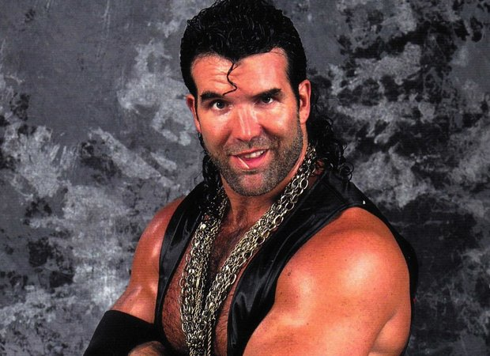

-

Scott Hall is savoring sobriety, one day at a time | FOX Sports
www.foxsports.com/.../wwe-scott-hall-razor-ramon-triple-h-shawn-michael...Sep 1, 2015 - Scott Hall finds peace after battling demons for decades. ... Now, 'Razor Ramon' is on the road back, having found sobriety thanks to friends Diamond Dallas Page and Jake Roberts. Scott Hall enjoys the accolades at his 2014 WWE Hall of Fame induction ceremony.
-
Scott Hall - IMDb
www.imdb.com/name/nm0356084/Scott Hall, Self: WrestleMania X. Scott Hall was born into a military family on October 20, 1958. Due to the army life he grew up a traveller and spent his high ...
-
WWE News: Scott Hall Calls Fellow WWE Hall Of Famer 'Bitter'
www.inquisitr.com/.../wwe-news-scott-hall-calls-fellow-wwe-hall-of-famer-bitter/ -
Scott Hall Net Worth - TheRichest
www.therichest.com/celebnetworth/athletes/wrestler/scott-hall-net-worth/ Scott Hall (@SCOTTHALLNWO) | Twitter
https://twitter.com/SCOTTHALLNWO
Jun 27, 2016 - That seemed to rub fellow WWE Hall of Fame star Scott Hall the wrong way. Pro Wrestling Scoops reported that Hall took to Twitter on Sunday ...
American professional wrestler Scott Hall has an estimated net worth of $3 million, with a $95 thousand annual salary. He is best known from the World Wrestling Federation (WWF), now WWE, under the ring name Razor Ramon as well as the World Championship Wrestling (WCW) with his ...